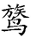
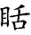

《游仙窟》今惟日本有之，是旧钞本，藏于昌平学[183]；题宁州襄乐县尉张文成作。文成者，张[184]之字；题署著字，古人亦常有，如晋常璩撰《华阳国志》[185]，其一卷亦云常道将集矣。张，深州陆浑人；两《唐书》[186]皆附见《张荐传》，云以调露初登进士第，为岐王府参军，屡试皆甲科，大有文誉，调长安尉迁鸿胪丞。证圣中，天官刘奇[187]以为御史；性躁卞，傥荡无检，姚崇[188]尤恶之；开元初，御史李全交劾讪短时政，贬岭南，旋得内徙，终司门员外郎。《顺宗实录》[189]亦谓博学工文词，七登文学科[190]。《大唐新语》[191]则云，后转洛阳尉，故有《咏燕诗》[192]，其末章云，“变石身犹重，衔泥力尚微，从来赴甲第，两起一双飞。”时人无不讽咏。《唐书》虽称其文下笔立成，大行一时，后进莫不传记，日本新罗[193]使至，必出金宝购之，而又訾为浮艳少理致，论著亦率诋诮芜秽。书之传于今者，尚有《朝野佥载》及《龙筋凤髓判》[194]，诚亦多诋诮浮艳之辞。《游仙窟》为传奇，又多俳调，故史志皆不载；清杨守敬作《日本访书志》[195]，始著于录，而贬之一如《唐书》之言。日本则初颇珍秘，以为异书；尝有注，似亦唐时人作。河世宁曾取其中之诗十余首入《全唐诗逸》[196]，鲍氏刊之《知不足斋丛书》[197]中；今矛尘[198]将具印之，而全文始复归华土。不特当时之习俗如酬对舞咏，时语如嫈嫇[199]，可资博识；即其始以骈俪之语作传奇，前于陈球之《燕山外史》[200]者千载，亦为治文学史者所不能废矣。
中华民国十六年七月七日，鲁迅识。
注 释
[182] 本篇最初以手迹制版印入1929年2月北新书局出版的《游仙窟》。
《游仙窟》，传奇小说，唐代张作。唐宪宗元和年间流入日本，国内久已失传。章廷谦据日本保存的通行本《游仙窟》、醍醐寺本《游仙窟》以及流传于朝鲜的另一日本刻本重新校订，标点出版。
[183] 昌平学 日本江户幕府1630年开办的以传授儒学为主的学校；1868年明治政府接收，改组为“昌平学校”，1870年关闭。地址在今东京汤岛。
[184] 张

（约658—730） 深州陆泽（今河北深州）人。按文中作“陆浑”，误。[185] 常璩 字道将，蜀郡江原（今四川崇州）人，晋代史学家。曾任散骑常侍、参军等职。《华阳国志》，十二卷，附录一卷，是一部记述我国西南地区历史事迹的书。
[186] 两《唐书》 即《旧唐书》和《新唐书》。《旧唐书》，后晋刘昫监修，张昭远、贾纬等撰，共二百卷。《新唐书》，宋代欧阳修、宋祁等撰，共二二五卷。《张荐传》，见《旧唐书》卷一四九、《新唐书》卷一六一。张荐是张的孙子。
[187] 刘奇 滑州胙（今河南延津）人。《新唐书·刘政会传》：“次子奇，长寿中为天官侍郎，荐、司马锽为监察御史。”天官，武则天时改吏部为天官。
[188] 姚崇 （650—721） 本名元崇，唐代陕州硖石（今河南陕县）人。睿宗、玄宗时任宰相。
[189] 《顺宗实录》 唐代韩愈等撰，共五卷。
[190] 文学科 唐代临时设置的制科的一种，由皇帝主试。名目很多，应试者可以重复参加考试。张曾参加“下笔成章”、“才高位下”、“词标文苑”等考试。
[191] 《大唐新语》 笔记，唐代刘肃撰，共十三卷。张事见该书第八卷。
[192] 《咏燕诗》 张作，全诗已佚，现仅存《大唐新语》所引四句。
[193] 新罗 古国名，位于朝鲜半岛的东南部。
[194] 《朝野佥载》 笔记，今存六卷，记载隋唐两代朝野遗闻传说。《龙筋凤髓判》，判牍书，共四卷。收录判决司法案件的骈俪体文牍。
[195] 杨守敬 （1839—1915） 字惺吾，湖北宜都人，地理学家、版本学家。《日本访书志》，共十六卷，是他任清朝驻日本公使馆馆员时，调查国内已失传而日本尚有留存的古书的著作。其中录有《游仙窟》，并加按语说：“男女姓氏，并同《会真记》，而情事稍疏，以骈俪之辞，写猥亵之状，真所谓傥荡无检，文成浮艳者。”
[196] 河世宁（1749—1820） 字子静，号宽斋，日本江户时期诗人。曾任昌平学学员长。《全唐诗逸》，共三卷，辑录流传于日本而《全唐诗》中遗漏的诗作百余首。内收《游仙窟》中的诗十九首。每首下分别署名张文成和《游仙窟》中的人物崔十娘、崔五嫂、香儿等。
[197] 鲍氏 鲍廷博（1728—1814），字以文，清代安徽歙县人。《知不足斋丛书》，是他于乾隆四十一年（1776）辑印的一部丛书，共三十集，一百九十七种。其中根据《全唐诗逸》录有《游仙窟》中的诗十九首。
[198] 矛尘 即章廷谦（1901—1981），笔名川岛，浙江上虞人。《语丝》撰稿人之一。
[199]

眼皮低垂；，羞涩的样子。都是唐代俗语。[200] 陈球 字蕴斋，清代浙江秀水（今嘉兴）人。《燕山外史》，共八卷，是他用骈体文写成的一部言情小说，约成书于嘉庆十五年（1810）。